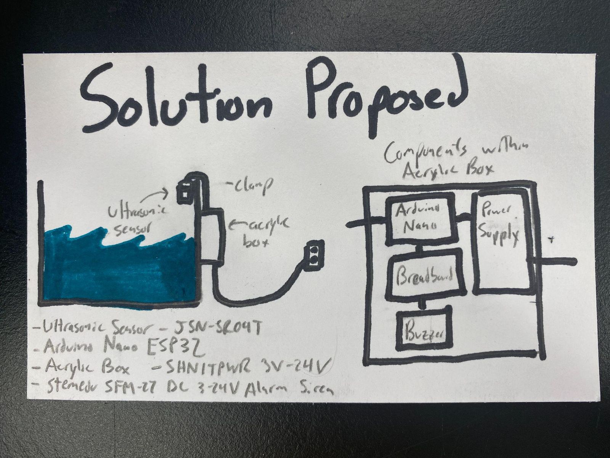
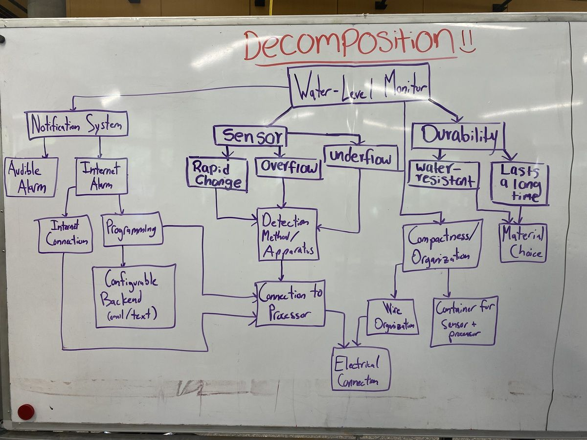
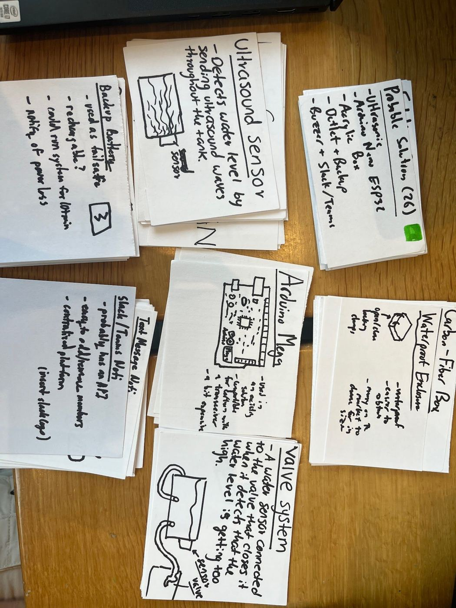
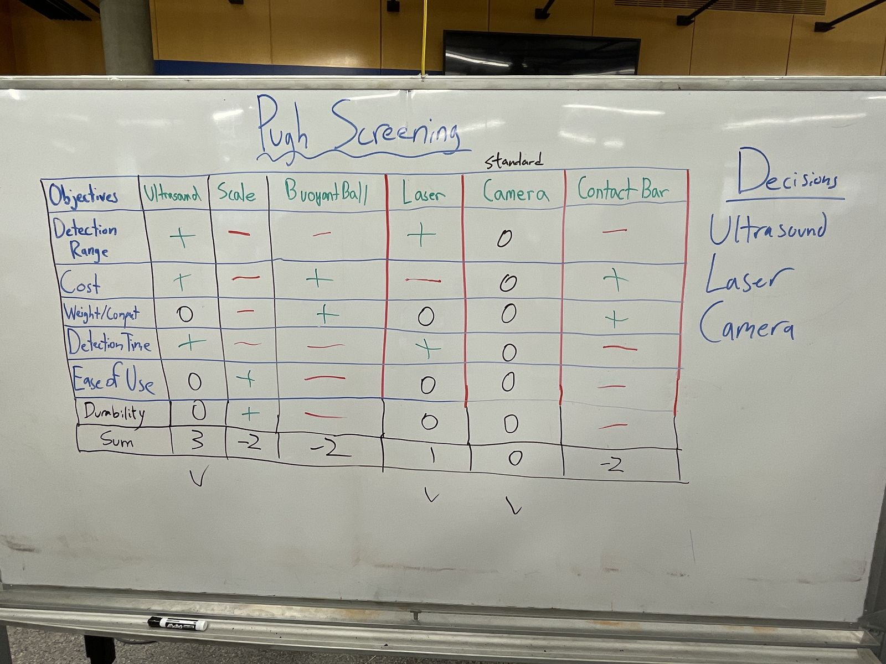
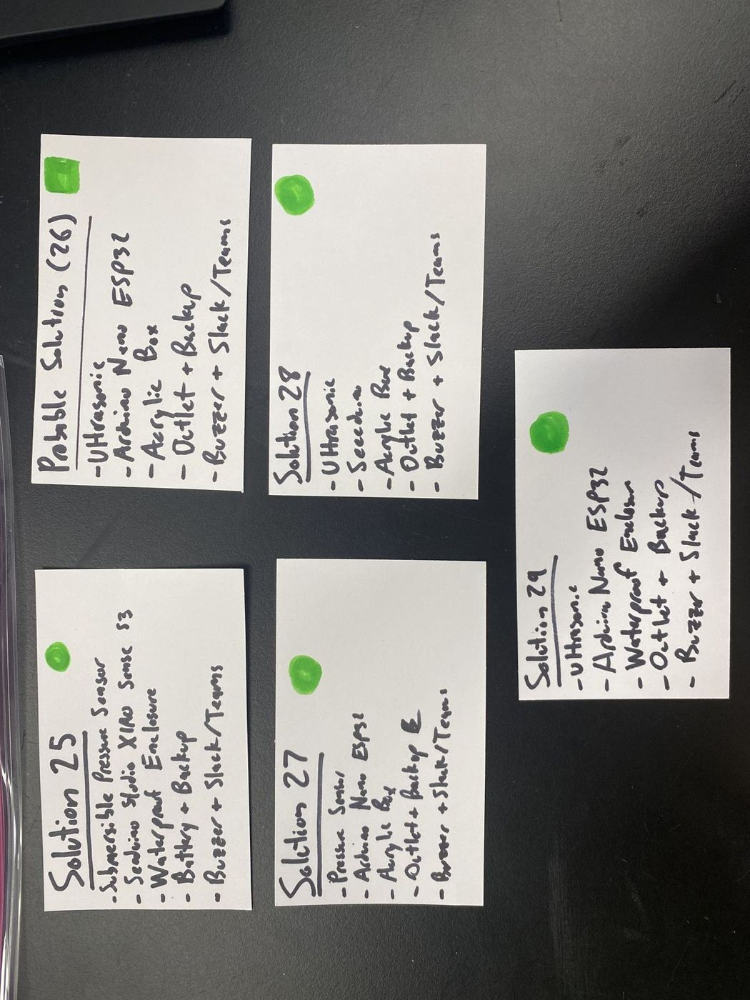
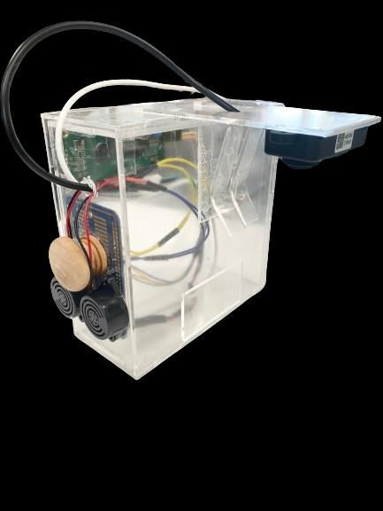
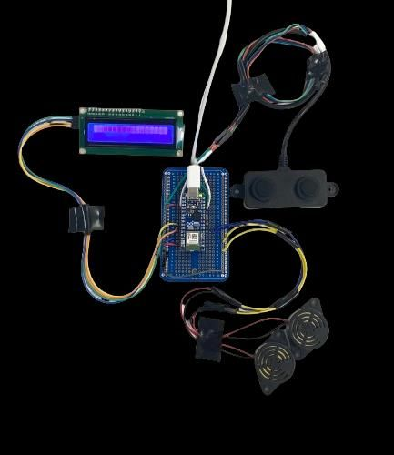
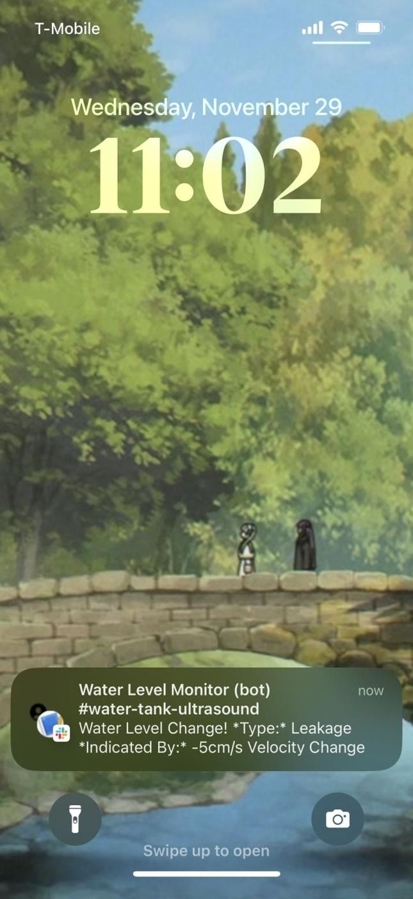
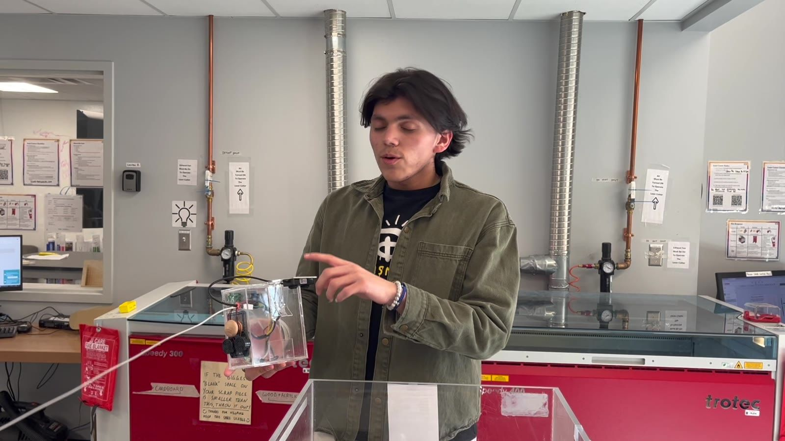

Case study · EGR 101 · Fall 2023
A water level alarm for ultrasound test tanks
A clamp-on monitor that watches the water in a lab's ultrasound tanks, then sounds a buzzer and posts a Slack alert when a tank overflows, leaks, or changes level too fast.


The problem
The Trahey Lab tests ultrasound devices in large, clear tanks of degassed water, and nothing was watching the water level. In our first client meeting (Sept 7, 2023), Dr. Bradway described two ways the lab floods:
- Overflow. Someone starts filling a tank from the bottom valve, steps away, and it spills onto the equipment around it.
- Leaks. During degassing, pumps cycle water out and back through hoses. If a hose comes loose or a valve is left partly open, the tank drains.
He wanted to know "when it drops a cm," with a fast alert for rapid drops and a remote alert because the lab is sometimes empty. The device also couldn't modify the glued tank, couldn't shed particles into the water, and had to stay off to one side so the middle of the tank stayed free for experiments.
Design an adaptable, compact water level and velocity monitor that alerts the lab to overflow, leakage, or an undesired level through an audible alarm and an online notification.
We found no system in the lab, and the market options we researched were either over budget or too bulky for a tank wall.
Process
About 60 ideas to one design in five weeks. The first winner wasn't the one we built.
Understand the client Sept 2023
Built a need-to-know list (17 background, 15 solution, 8 governing, and 4 business questions), turned it into an interview guide, and met Dr. Bradway at the lab. The team split up 16 research sources, from laser and camera flood gauges to Arduino tank monitors.
Set design criteria Memo, Sept 19
5 constraints (fully water resistant, audible alarm, under 10 cm in the tank, detect a 5 cm level change, under $75) and 9 objectives ranked with a pairwise comparison chart, including Slack or email alerts and catching a 1 cm/s rate of change.
Decompose and brainstorm
Split the monitor into sensor, processor, enclosure, power, and notification blocks, then filled about 60 index cards. Some ideas were jokes (train a fish to press a button), which we kept on purpose to loosen up the room.


Screen
Pugh screening matrices cut each block to its strongest options. For sensing, ultrasonic, laser, and camera moved on; a contact bar, a floating ball, and a scale were dropped.
Combine and score
A morph chart gave about 10 combinations, so we switched to shuffling the cards and reached 29. A weighted scoring matrix (accuracy 35%, ease of use 20%, cost 15%, durability 15%, buildability 10%, size 5%) picked a submersible pressure sensor with a Seeed XIAO in a waterproof enclosure.
Pivot Design review, Oct 3
A review with Dr. Delagrammatikas pushed us to generate five new combinations and score again. An ultrasonic sensor with an Arduino Nano ESP32 in an acrylic box scored 3.5 out of 5, against 2.7 for the pressure design. It was cheaper, easier to build, sat outside the water, and the ESP32's built-in Wi-Fi made online alerts simple.
| Final scoring round | Sensor | Processor | Enclosure | Score / 5 |
|---|---|---|---|---|
| Solution 26 (built) | Ultrasonic | Arduino Nano ESP32 | Acrylic box | 3.50 |
| Solution 29 | Ultrasonic | Arduino Nano ESP32 | Waterproof enclosure | 3.40 |
| Solution 28 | Ultrasonic | Seeed XIAO | Acrylic box | 3.25 |
| Solution 25 (first winner) | Pressure | Seeed XIAO | Waterproof enclosure | 2.70 |
| Solution 27 | Pressure | Arduino Nano ESP32 | Acrylic box | 2.55 |


Prototype and refine Oct to Dec
The design kept changing as we built. The epoxy-sealed box became a two-part acrylic drawer, outlet power became USB-C, Teams became Slack, the sensor changed from a JSN-SR04T to an AO2YYUW, and an LCD was added late as a stretch goal. Our accuracy target tightened from 5 cm to under 1 cm once we saw what the sensor could do.
Test Plan Nov 2, poster Dec 7
Wrote a test plan for each criterion, then ran the tests on a 12 × 20 × 10 in tank.
Final design
The device hangs on the tank wall from an acrylic hinge, looks down at the water with an ultrasonic sensor, and alerts three ways: buzzer, LCD, and Slack.



- Enclosure. A 6 × 6 × 2.5 in laser-cut acrylic box joined with acrylic cement. A two-part drawer holds the electronics, keeps water out, and slides open for maintenance. A bent acrylic hinge clamps to the tank wall without modifying it, and a separate mount holds the sensor over the water.
- Electronics. An Arduino Nano ESP32 reads an AO2YYUW waterproof ultrasonic distance sensor and drives two SFM-27 piezo buzzers and an LCD1602 display. The LCD runs over I2C to cut down on wiring. Every part plugs in through connectors, and the whole unit runs on USB-C.
- Software. The board checks distance about every 500 ms and flags readings outside the allowed range. It computes velocity from the change in distance over 2 seconds and checks that too. On a fault it sounds the buzzers and posts the alert type (overflow, leakage, or out of range) to a lab Slack channel.
My role
I worked mainly on the hardware, and on the design process as part of the full team.
What I did
- Helped design the circuit connecting the sensor, buzzers, and LCD to the Arduino.
- Soldered all of the components onto the board.
- Helped design and assemble the acrylic box, drawer, and mounts.
- Joined every client meeting and interview, and worked on criteria, brainstorming, Pugh matrices, and testing.
- Presented the electronics in our final video.
What teammates led
- A teammate led the Arduino code and the Slack integration. Parts were written by the whole team together, and my share of the code was small.

Results
The prototype met all 6 criteria we could test in class. The 2 user-survey criteria were still pending at the poster session.
| Criterion | Target | How we tested | Result |
|---|---|---|---|
| Level accuracy | Error under 1 cm | Filled the tank to normal and abnormal levels and checked the sensor output | Within 1 cm Pass |
| Velocity detection | Flag changes over 1 cm/s | Poured water to push the rate inside and outside the bounds | Flagged abnormal velocity, including changes above 0.5 cm/s Pass |
| Durability | Survive overflow and repeated use | Worked the box features 50 times and ran it under water for 2.5 min | Sturdy and dry Pass |
| Cost | Under $75 | Summed material costs | $55.80 Pass |
| Audibility | Heard outside the lab | Sounded the alarm at random and asked bystanders outside the room | 10 of 10 heard it Pass |
| Mobile alert | Notify by phone | Simulated overflow and leaks and watched Slack | Alert arrived every time Pass |
| Ease of use | 3.5 or higher on a 1 to 5 scale | Lab staff survey after 3 weeks of use | Pending |
| Compactness | 3.5 or higher on a 1 to 5 scale | Lab staff survey after 3 weeks of use | Pending |
Lessons learned
A scoring matrix only ranks the options you put in it, so keep generating options after a winner appears.
Reopen the decision when new options appear
Our first winner was a submersible pressure sensor. One design review surfaced combinations we hadn't scored, and the ultrasonic design beat it 3.5 to 2.7. Moving the sensor out of the water also removed most of the waterproofing risk.
Specs should move with evidence
We set a 5 cm accuracy target before we had touched a sensor. Testing showed under 1 cm was possible, so we raised the bar instead of passing an easy test.
Fabrication takes longer than wiring
We underestimated the acrylic drawer and the buzzer mounting, and overestimated soldering. Planning several classes ahead kept failing because each task depended on the last, so we switched to weekly quotas. Next time I'd hold one feasibility session up front to size the hands-on work.
Design for the person who maintains it
Connectors on every part, a drawer instead of a sealed box, and a hinge that clamps on without touching the glued tank all came from the client's constraints, not from the sensing problem.
What I'd do next: let the lab change thresholds with a knob or a phone command instead of reprogramming the Arduino, add a device-failure alert (the client asked for one), and tie the alarm to a valve that shuts off the water.